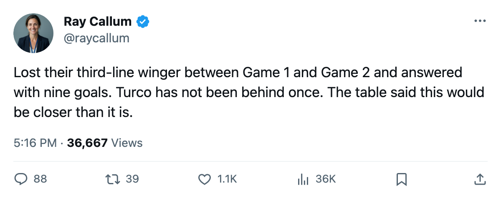

Notes from the West: Dallas is 3-0 up, and Detroit has 4 goals in 3 games
Turgeon is gone until May. The line reshuffle that followed produced 9 goals.
 Ray CallumSenior correspondent · Home Ice Network
Ray CallumSenior correspondent · Home Ice Network
 Marty Turco94 has not trailed in a series game. Three wins, 1.22 goals-against, .923 on the save side. The 2nd-seeded
Marty Turco94 has not trailed in a series game. Three wins, 1.22 goals-against, .923 on the save side. The 2nd-seeded  Dallas Stars sit three games to none on the 7th-seeded
Dallas Stars sit three games to none on the 7th-seeded  Detroit Red Wings, and Game 4 comes tonight in Detroit.
Detroit Red Wings, and Game 4 comes tonight in Detroit.
 Mike Modano88 has 4 goals and 5 points.
Mike Modano88 has 4 goals and 5 points.  Jere Lehtinen83 has 5 points of his own, 1 goal and 4 assists, playing up the lineup since
Jere Lehtinen83 has 5 points of his own, 1 goal and 4 assists, playing up the lineup since  Pierre Turgeon75 landed on the injured list with a shoulder between April 9 and April 12. Turgeon, rated 77, is not back before May 12.
Pierre Turgeon75 landed on the injured list with a shoulder between April 9 and April 12. Turgeon, rated 77, is not back before May 12.
Dallas put three new defensemen in the lineup during that stretch:  Philippe Boucher75, Matthieu Descoteaux65 and
Philippe Boucher75, Matthieu Descoteaux65 and  Richard Matvichuk73. Lehtinen got a center slot on the power play and a promotion to the first penalty-killing unit. The reshuffle produced 9 goals across 3 games.
Richard Matvichuk73. Lehtinen got a center slot on the power play and a promotion to the first penalty-killing unit. The reshuffle produced 9 goals across 3 games.
Detroit hasn't come close.  Dominik Hasek86 is 0-2 with a 2.19 and .868.
Dominik Hasek86 is 0-2 with a 2.19 and .868.  Curtis Joseph84 is 0-1 with a 4.00. Detroit has 4 goals in 3 games. The Dallas top four of Modano (5 points), Lehtinen (5),
Curtis Joseph84 is 0-1 with a 4.00. Detroit has 4 goals in 3 games. The Dallas top four of Modano (5 points), Lehtinen (5),  Stu Barnes76 (2) and
Stu Barnes76 (2) and  Sergei Zubov83 (2) have 14 against 9 from Detroit's best four.
Sergei Zubov83 (2) have 14 against 9 from Detroit's best four.
The regular season said this was a matchup: Dallas went 5-2 against Detroit with 26 goals to 20. The ice through 3 games has said something else.
Game 4 is in Detroit tonight. Dallas closes it there or the series stays alive.
